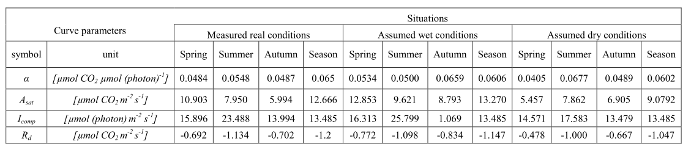
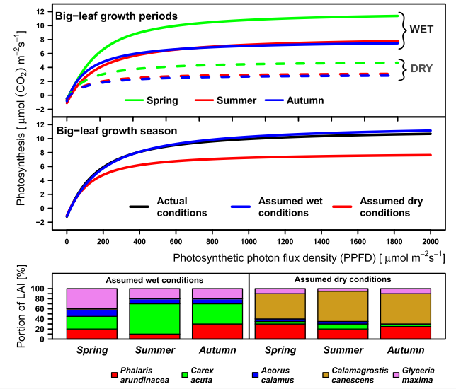

13 大叶模型
本节所涉及的大叶模型，并非指用涡动数据来进行大尺度的直接测量后的大叶模型 (Knauer et al. 2018)，而是指 Mejdová et al. (2021) 使用 LI-6400 和 LI-3000C 的方式进行的个体叶片尺度的光合测量，外推到整个群落尺度的大叶模型，这也是一个比较新的测量方法，发表在 Scientific Reports。这里对其方法进行概述，因为所用方法是之前早都提过的基本方式。
13.1 叶片尺度测量
文章中所使用的是 LI-6400，但毫无疑问，LI-6800 可以更好的胜任该工作，具体测量方法为：
从 4 月中旬到 10 月，除 6 月因为洪水有中断外，每周进行一次光响应曲线的测量。
为最小化几个优势种测量时样本之间的变异性，考虑了枝条的差异、枝条不同叶片之间的年龄、以及环境的随机效应的影响。测量选取的是一系列相邻的枝条或草丛。在特定的日期，每个植株选择两个枝条上的，在完全展开的成熟叶片中选择最 2-4 最年轻的叶片进行测量（2片或4片，由物种而定）。
测量的不为距离叶片顶端约 3/4，选择的都是冠层顶部的叶片。
测量过程是标准的光响应曲线的测量流程，不同的是在光强设置为 0 时，额外等待 4 min，用于测量暗呼吸速率。
该实验测量的时间是欧洲中部时间的 7-11 点。
13.2 数据的处理
13.2.1 单个测量数据的处理
单个测量的数据使用的是非线性拟合，选取的为非直角双曲线模型，使用了
nls2作为非线性拟合的工具。暗呼吸速率的值是拟合模型曲线与纵坐标的交点。
3.不同物种、不同测量日期和不同生育期的参数各自拟合。
13.2.2 大叶模型的数据处理
在不同季节，使用 LI-3100C 测量了不同物种的叶面积指数。
计算单个植株的 LAI 占不同时期以及整个生长季 LAI 的比例，以此作为该植株拟合参数的权重。而整个大叶模型的参数则是对这些权重数据进行求和。然后将这些参数带入所用的非直角双曲线模型。

光响应曲线的拟合可以参考 ?sec-nonrec-mod。部分实验结果如下：
